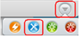
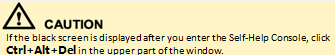
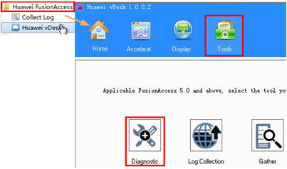
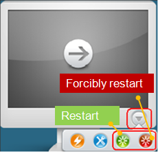

| Home > VMs cannot be accessed |
| Online Help | =======WI Onlinehelp | >>>>>>> 7cf7c9997bcec953e9a329c30100afadb59cc3b7
| VMs cannot be accessed.(Reasons: disabling the NIC, modifying NIC information, and modifying the file or registry information related to connected services) |
Method 1: 1. Enter the Self-Help Console.  <<<<<<< HEAD 2. Click the Huawei FusionAccess > Huawei vDesk in the Start menu. =======2. Click the FusionAccess > Huawei vDesk in the Start menu. >>>>>>> 7cf7c9997bcec953e9a329c30100afadb59cc3b73. Click Tools > Diagnostic to restore the VM. 4. Click VM to enter the VM desktop. 5. Use Method 2 if you still can't login to the VM. |
 |
|
Method 2: 1. Click to restart the VM, as shown in the right figure. 2. Waiting for the restart. 3. On the login page, enter the domain username and password. Synchronize the change after a local user changes a username. Otherwise, the user cannot log in to the VM next time. 4. On the displayed VM list page, click VM to enter the VM desktop. 5. If you cannot log in to the VM, click to forcibly restart the VM, as shown in the right figure. 6. Repeat step 2 to 4 to login to the VM. If you can't, contact the administrator. |
 |